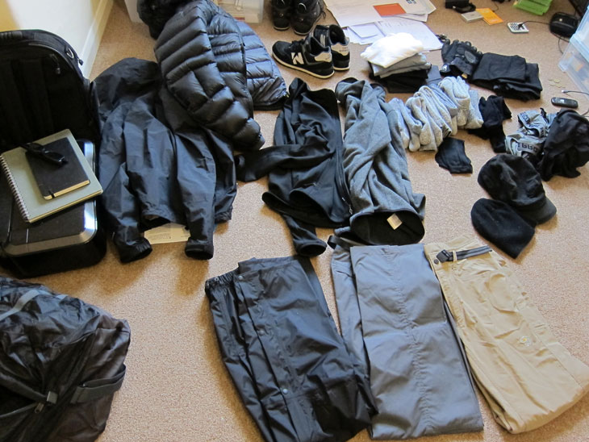

Not being an outdoorsy type, I didn’t have much in the way of ‘extreme’ clothing, so there was a full wardrobe to buy, with little idea of what exactly, was needed.
Having read a few books and online articles, it seems like the most important thing to keep in mind is to dress in layers - lots of thin, breathable layers you can peel off and slip back on as required.
Wikipedia has quite a good article on layered clothing.
The most important (and expensive - £260) piece of clothing I would buy would be my down jacket (Norrona Lyngen Down750).
I’ve no clue about down jackets, so I settled on going to Snow+Rock and buying one there based on the advice of a sales assistant. As mentioned with the boots, if you know what you’re looking for, you can easily buy stuff for cheaper online.
I should also mention that you can hire perfectly good down jackets in Kathmandu for your trek, as two of our group did. They’re not premium named-brand products, but if you don’t want the expense or the hassle of owning one, a hired jacket does the job at a fraction of the cost.
It did occur to me to just take my snowboard jacket, but I had doubts as how well it could keep me warm, being that it’s designed for people doing intensive sport. However, there was a girl in my group who did primarily wear her ski jacket, and she seemed fine with it.
Body:
- down jacket
- fleece
- thin jacket
- waterproof shell jacket
- long/short sleeved thermal shirts
Legs:
- convertible trekking trousers
- regular trekking trousers
- waterproof shell trousers
- long thermal pants
- regular pants
Other:
- cap (for the sun)
- beanie (for sleeping and cold)
- scarf (for cold and sun)
- snowboard gloves
- liner gloves (thin woolly gloves, for extreme cold)
- light scarf (cold and dust)
- flip flops (useful for walking around the ‘open’ style showers)
Total cost: approx £500
Afterthoughts:
As luck would have it, the weather was perfect the whole way through our trek - not a drop of rain or snow. Each day would typically start off with a cold, cold morning (and colder the higher we got) which would gradually get intolerable warm as we walked through to mid-day. I would wear all my layers to begin the day and slowly peel off as we walked, then put everything back on again the closer we got towards evening. It helps to have clutter-free clothing that is easy to remove and store, as well as a bag with easy-to-access compartments.
If I had to do the trip again, I’d make the following changes:
- more convertible trekking trousers
- tracksuit bottoms
- trainers
- more (regular) pants and pairs of socks
- three finger mitts instead of snowboard gloves
- compression sacks for dirty laundry and down jacket
I’d take more walking trousers (possibly one or two more pairs) to change into, and a pair of something warm and comfortable to sleep, and lounge about in when hanging around the lodge (e.g. tracksuit bottoms). Some regular t-shirts would also have been nice, as well as trainers, when not on the trail (you can see a pair in the photo which I decided not to take at the last minute, to save space). It’s quite annoying having to put on hiking boots in the middle of the night to go to the toilet, and usually too cold for just flipflops. I’d also take even more socks as well as a compression sack (like what sleeping bags come with) to keep all my dirty laundry in (I was using plastic shopping bags and they took up for too much room in my bag).
It would also have been nice to have had decent sunglasses for the trek. I had hoped to buy a pair of category 4 sunglasses once I got out there, but not even The Sunglass Hut sell eyewear designed for the mountains. In the end, I had to settle for a cheap pair of knock-offs I bought from some random shop for a tenner. They steamed up when I wore them with my scarf over my face (dust in mouth, or dust in eyes?), but they kept the sun out all right, plus they blocked out the cold wind (which’d really mess up my contact lens) and that was all I needed them for, really.
Snowboard gloves were also a bit overkill. My thin liner (gloves) did the job well enough and I found keeping my hands in my pockets kept them warmer than my thick gloves would. Maybe a pair of three finger mitts would do the job better, especially if you plan on using trekking poles and can’t just use your pockets.
Also note that if you’re going to wear convertible trousers (where you can remove the legs to turn into shorts), plan ahead and don’t put your long underwear on underneath - long johns and shorts aren’t a good look …
Laundry: You won’t get many chances to wash your clothes out there. You’re recommended to use available laundry services rather than wash your own clothes, and I’d probably suggest that you do - it’s a lot less hassle. At least try to keep a stack of clean socks and underwear - I generally had two pairs of socks on the go on any given trekking day - one pair to wear while the other pair aired out. Lukla and Namche had laundry services available on the trail (washed and dried overnight).